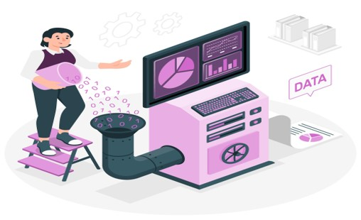

ETL and ELT Project
with Microsoft Azure

Image by storyset on Freepik
Tools Used Microsoft Azure, Power BI, Python, R
Skills Used ETL (Extract, Transform, Load) and
ELT (Extract, Load, Transform) methodologies,
Data Visualization, Cloud Computing
Embark on a journey through our ETL and ELT project for real-time data insights, powered by Azure technologies. Crafted during my Techionista Academy training with my team, this comprehensive documentation, consolidated into a single markdown file, includes information on the project's methodology, Python script, and a live dashboard screenshot showcasing real-time information on the race.

Tool Used SQL
Skills Used Data Cleaning, SQL Querying
This project involves cleaning and querying COVID-19 data, focusing on tasks such as data standardization and calculating vaccination percentages. The SQL queries will provide a foundation for future in-depth analysis, offering a comprehensive view of the pandemic's impact on a global and country-specific scale.
Correlation Analysis
in Python

Tools Used Python, Jupyter Notebook
Skills Used Exploratory Data Analysis, Data Visualization
This Python Jupyter Notebook project conducts an analysis of a movie dataset using Pandas, NumPy, and Seaborn. The analysis includes data cleaning, visualization of relationships between factors, and hypothesis testing. The project provides valuable exploratory insights for further investigation into the correlation between budget and gross revenue in the movie dataset.
COVID-19 Impact
Tableau Dashboard

Tools Used Tableau
Skills Used Data Analysis, Data Visualization, Predictive Moedling
Explore global COVID-19 impact on our Tableau dashboard with key stats: total cases, deaths, and death percentages. Gain regional insights with a continent-wise death bar graph and visualize population infection percentages on an interactive world map. The dashboard also includes a predictive line graph for future infection projections.